Algunos diagramas de Venn para dos atributos
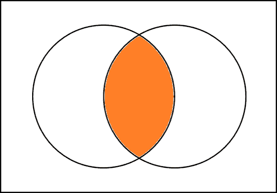
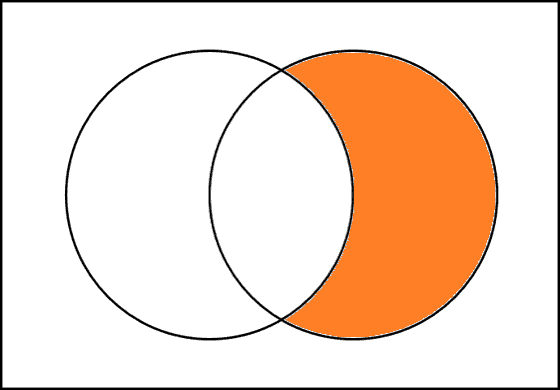
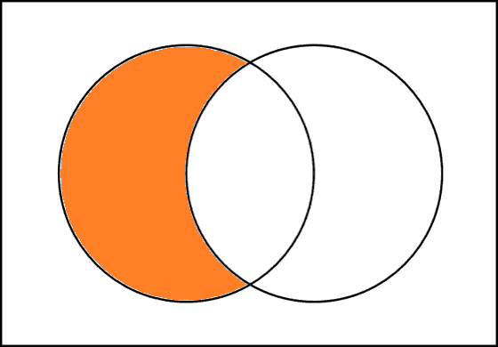
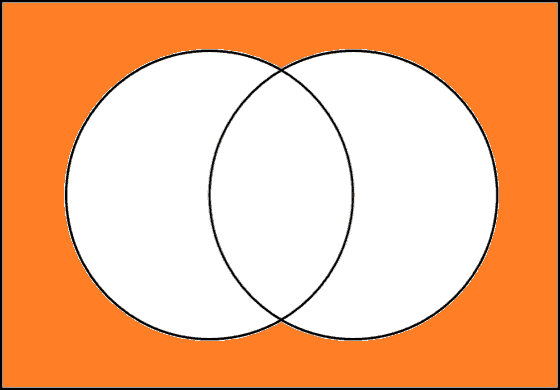
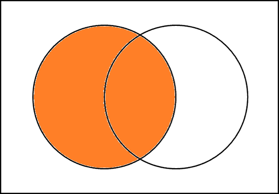
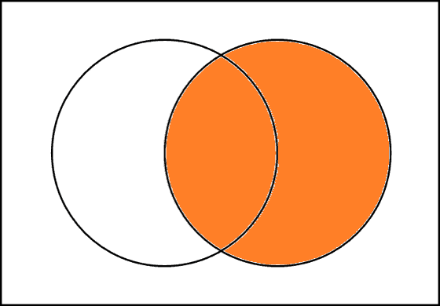
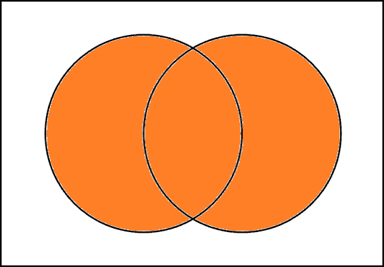
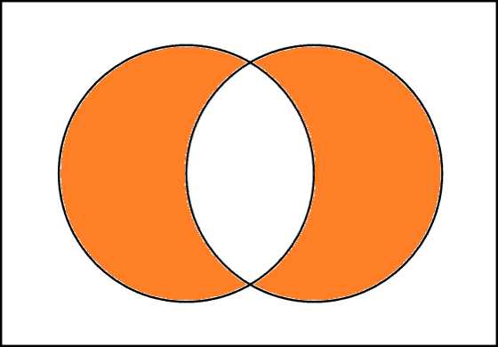
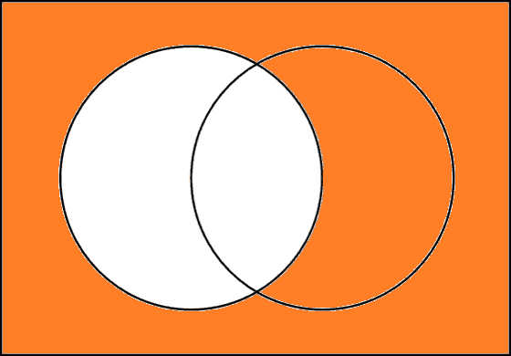
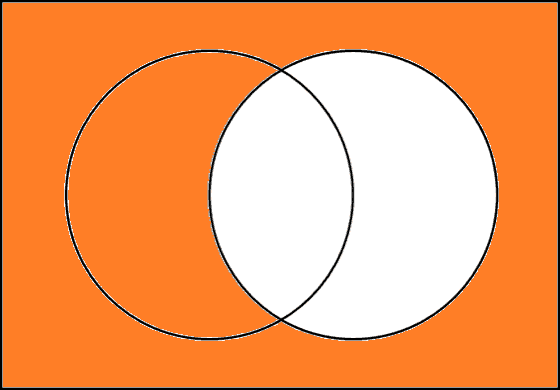
Algunos diagramas de Venn para tres atributos
 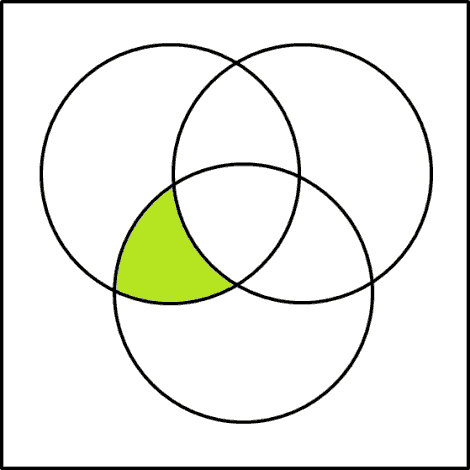
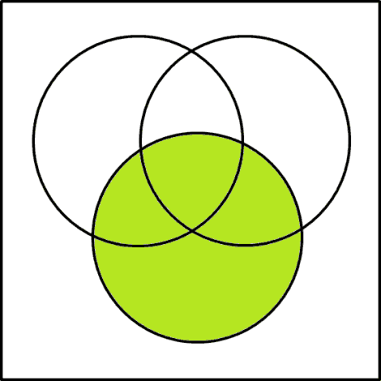
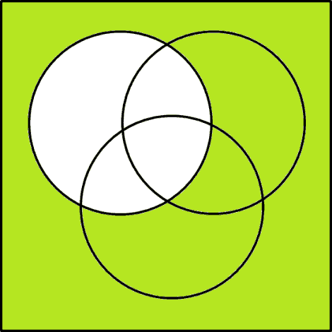
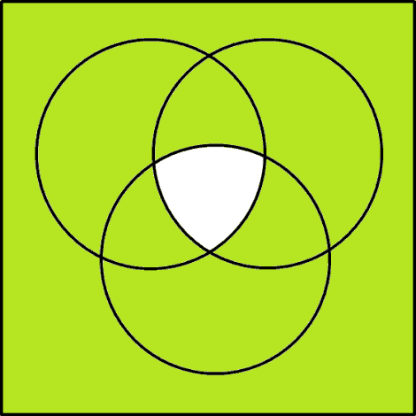
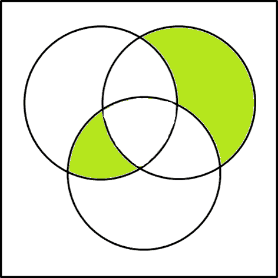
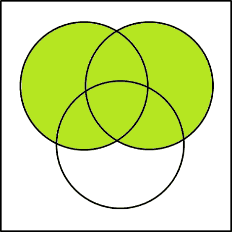
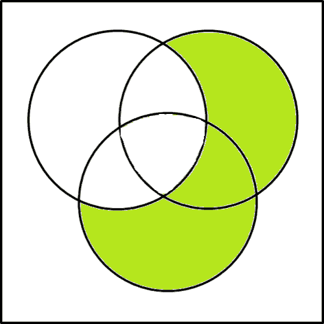
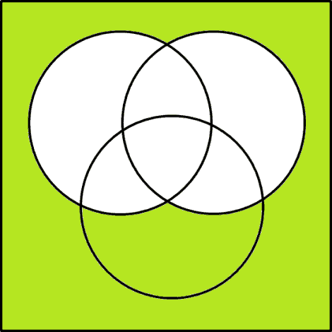
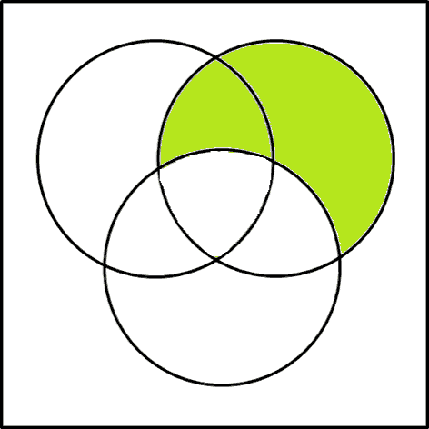
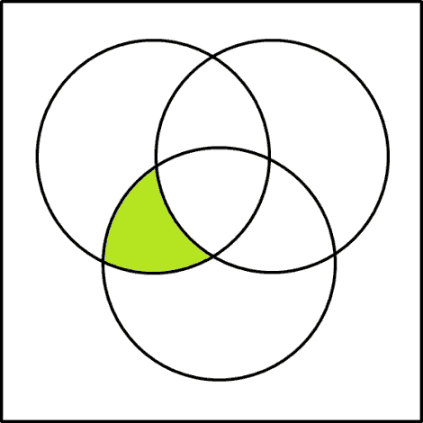
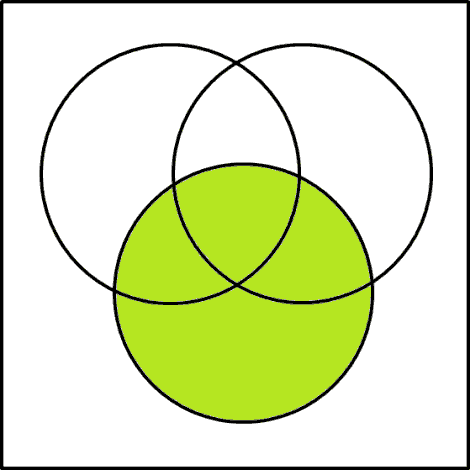
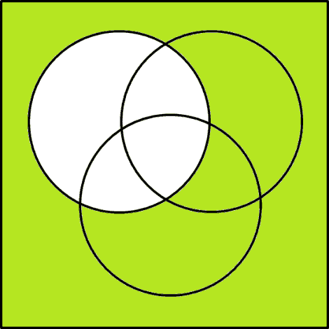
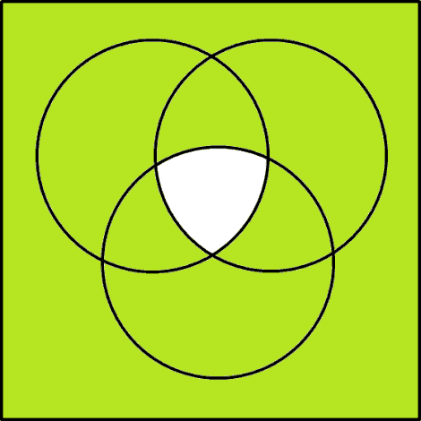
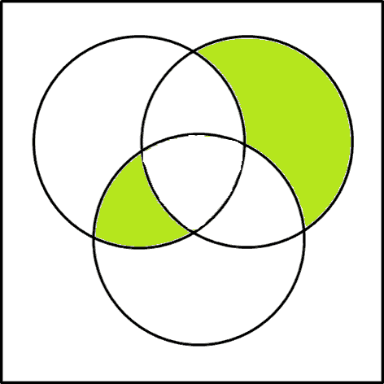
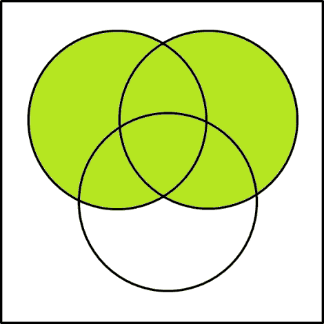
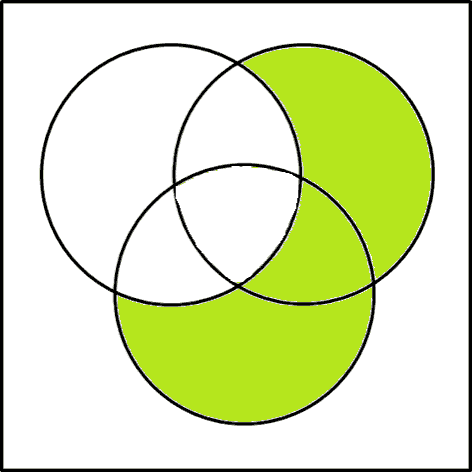
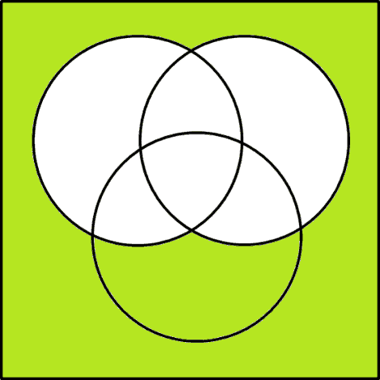
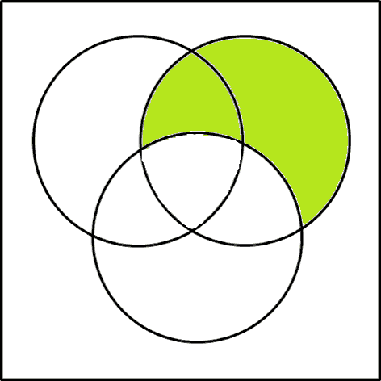
Una de las leyes de Morgan
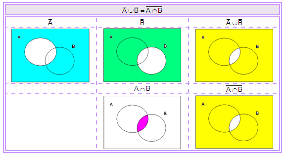
// Full list of configuration options available here:
// https://github.com/hakimel/reveal.js#configuration